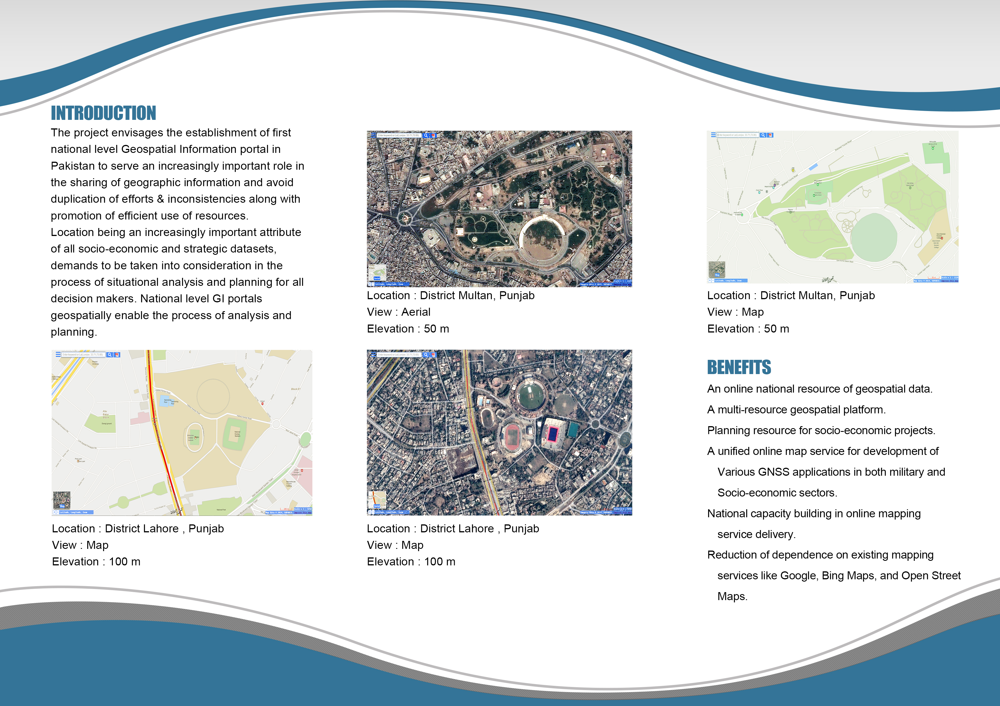
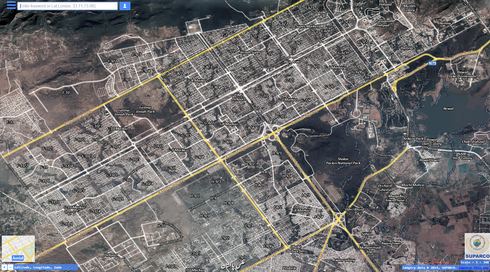
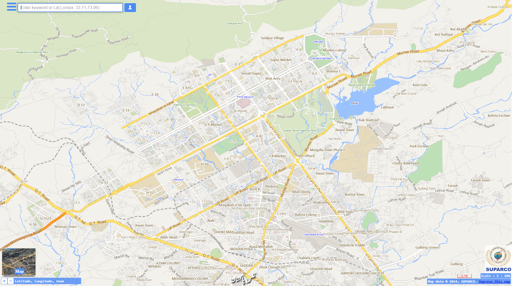
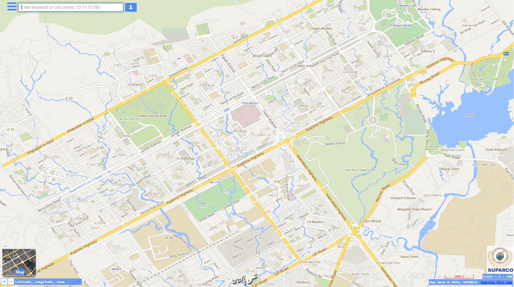
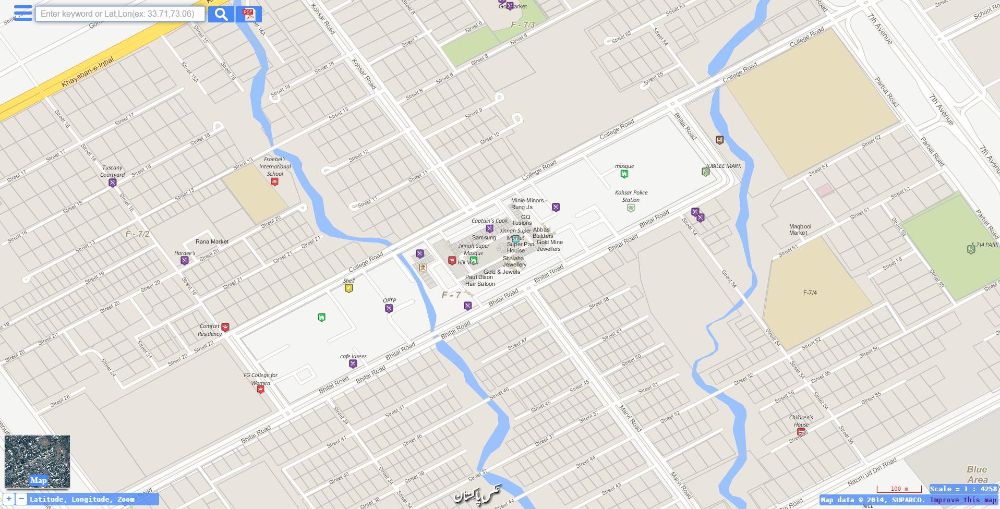
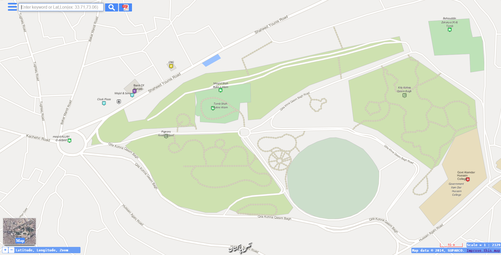
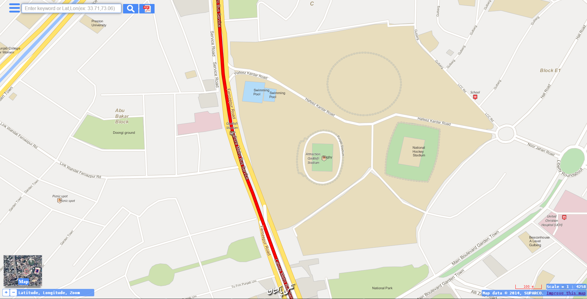
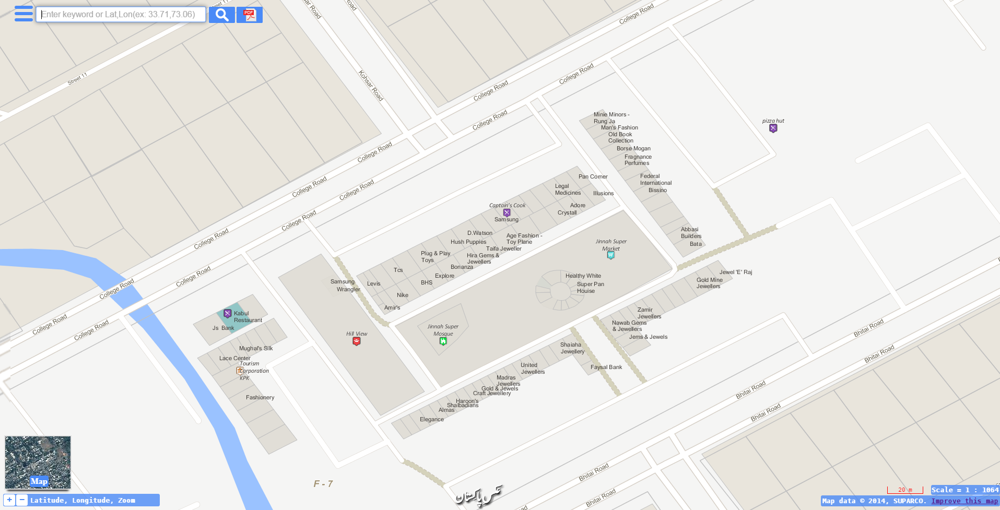

<div class="container">
    <div class="row topspace">
        <article class="col-sm-8 maincontent">
            <div class="your-class">
                <div></div>
                <div></div>
                <div></div>
                <div></div>
                <div></div>
                <div></div>
                <div></div>
                <div></div>
                <div></div>
            </div>
            <br>
            <p>In 2013, my companyd desired to build a map based GIS solution at national level, which would allow technicians and engineers to view the spatial SRS data on the fly over the web alongwith vector datasets.</p>
            <br>
            <p>Goal was to suggest and develop a Google Maps alternative and present users with an open access to datasets at national level. It housed over 70 vector datasets ranging from POIs to roads to water networks. Also, project hosted over 2 TB of SRS imagery of SPOT-5 satellite at that time, mosaiced on the fly using Geoserver plugins for Pakistan National Level. Vector datasets were housed in a postgresql database.
            </p>
            <br>
            <p>Portal offered a unique solution to gather data and allowed user for generation of data over the web map following google maps idea. It was called crowd sourcing and allowed users to add/edit/delete any data which went live after necessary cleaning by the administration. I designed, developed and deployed the portal from scratch to top. It was written using all open source libraries and tools & final solution was deployed over data servers.</p>
        </article>
        <aside class="col-md-4 sidebar sidebar-left">
            <div class="widget">
                <ul class="list-group">
                    <li class="list-group-item pull-left">
                        <h4 class="custom-subsubheader">Company Project</h4>
                        <p><strong>2013</strong></p>
                    </li>
                </ul>
            </div>
        </aside>
    </div>
</div>